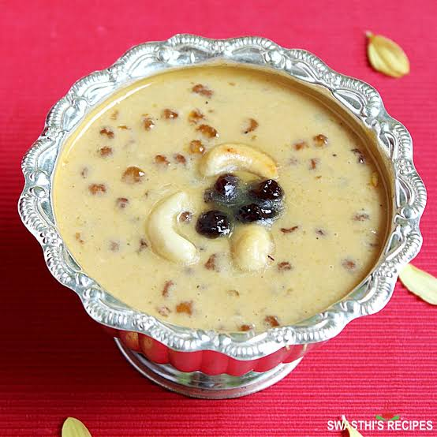

Telugu Ruchulu
తెలుగు రుచులు
SabudanaPayasam|
సబుదానాపాయసం
Home Page
Click to change the language
తెలుగు కోసం క్లిక్ చేయండి
Ingredients:
½ cup Sabonda
4 cups full-fat milk
½ cup sugar (adjust to taste)
2 tbsp ghee (clarified butter)
¼ tsp cardamom powder
10-12 cashews, chopped
10-12 raisins
A few saffron strands (optional, for flavor & color)

Instructions:
Roast the Vermicelli -
Heat ghee in a pan, add vermicelli, and roast until golden brown. Set aside
Soak & Cook Sabudana –
Rinse sabudana and soak in water for 30 minutes. Then, cook it in 1 cup of water until it turns soft and translucent.
Cook the Vermicelli –
Add the roasted vermicelli to the boiling milk and cook until soft.
Sweeten & Flavor –
Add sugar, cardamom powder, and saffron strands. Stir well and cook for a few more minutes.
Garnish & Serve –
Fry cashews and raisins in ghee, mix them into the payasam, and serve warm or chilled
Tip
కావలసినవిః
½ కప్పు సబుదానా (సాగో/టేపియోకా ముత్యాలు)
4 కప్పులు పూర్తి కొవ్వు పాలు
½ కప్ చక్కెర (రుచికి సర్దుబాటు చేయండి)
2 టేబుల్ స్పూన్లు నెయ్యి (స్పష్టమైన వెన్న)
¼ స్పూన్ యాలకుల పొడి
10-12 జీడిపప్పు,
తరిగినవి 10-12 ఎండుద్రాక్ష
కొన్ని కుంకుమపువ్వు తంతువులు
వెర్మిసెల్లిని కాల్చండి -
పాన్లో నెయ్యి వేడి చేసి, పచ్చిమిర్చి వేసి, బంగారు గోధుమ రంగు వచ్చేవరకు వేయించాలి. పక్కన పెట్టండి
సాబుదానాను నానబెట్టి ఉడికించాలి -
సాబుదానాను కడిగి నీటిలో 30 నిమిషాలు నానబెట్టండి. తరువాత, అది మెత్తగా మరియు అపారదర్శకంగా మారే వరకు 1 కప్పు నీటిలో ఉడికించాలి
వెర్మిసెల్లిని ఉడికించాలి -
మరిగే పాలలో కాల్చిన వెర్మిసెల్లిని వేసి మెత్తగా ఉడికించాలి
స్వీట్ & ఫ్లేవర్ -
పంచదార, యాలకుల పొడి, మరియు కుంకుమపువ్వు తంతువులను జోడించండి. బాగా కదిలించు మరియు మరికొన్ని నిమిషాలు ఉడికించాలి.
గార్నిష్ & సర్వ్ -
జీడిపప్పు మరియు ఎండుద్రాక్షలను నెయ్యిలో వేయించి, పాయసంలో కలపండి మరియు వెచ్చగా లేదా చల్లగా సర్వ్ చేయండి.
చిట్కా